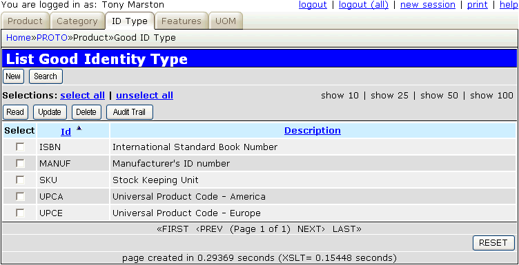
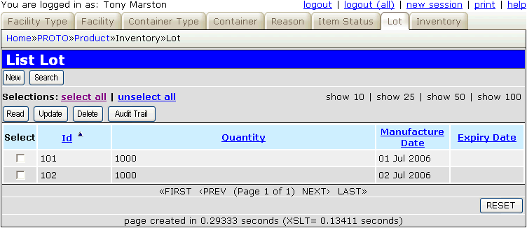

Figure 22 - Containers

29th June 2006
Amended 9th July 2006
The download of the Radicore framework includes several prototype applications which demonstrate the kind of application which the framework is designed to support. One of these is the PRODUCT application, and the purpose of this article is to provide a description of that application so that you can see what it does as well as how it does it. This may prove useful in the event that you should ever want to build your own version of the prototype.
This is the database schema used by this application showing all the entities (tables) and the relationships between them.
This schema is based on the one documented in The Data Model Resource Book by Len Silverston.
Figure 1 - Database Schema (Product details)
The product database includes products which the organisation provides. These may be assembled or manufactured internally, or may be obtained from external suppliers. Some of the information may be independent of the supplier, such as the description, category and features of the product. Some of the information may depend on the supplier, such as availability and pricing.
| product_id | This is the entry's identity. |
| product_name | This is the entry's description. |
| product_subtype |
|
| uom_id | This is a foreign key to the UNIT_OF_MEASURE table. |
| date_intro | This is the date the product was introduced. |
| end_date_sales | This is the date after which the product will no longer be sold. |
| end_date_support | This is the date after which the product will no longer be supported. |
Figure 2 - Product Definition
The classification of products is a key aspect of maintaining product information. Products are often classified in many ways - by product line, by model, by product grade, by industry segments, and by various other categories. Instead of giving each of these classifications a separate entity in the data model it is often a better idea to group them together in a single entity as this allows categories to be easily related as supertype and subtype. This allows the targeting of market interest in products based on several product categories, and also allows product pricing to be based on and related to many product categories.
It is also possible for a product category to contain other product categories. For example, the categories "paper" and "pens" can be defined as sub-categories to "office supplies". It is also possible for any category to belong to more than one super-category. For example, "paper" is a sub-class of "office supplies" but may also be a sub-class of "computer supplies".
It is possible to give a product more than one category. For example, diskettes are categorised both as office supplies and computer supplies. When performing various queries by category, such as sales reports, it would be possible for the same product's sales to appear under multiple categories. The mode has a primary flag to indicate which is the primary category for each product to avoid this situation.
| prod_cat_id | This is the entry's identity. |
| prod_cat_desc | This is the entry's description. |
| product_usage | This is a way of categorising products by usage. |
| product_industry | This is a way of categorising products by industry. |
| product_materials | This is a way of categorising products by material. |
Figure 3 - Product Category
| prod_cat_id_snr | This is the senior/parent entry in the hierarchy. It is a foreign key to the PRODUCT_CATEGORY table. |
| prod_cat_id_jnr | This is the junior/child entry in the hierarchy. It is a foreign key to the PRODUCT_CATEGORY table. |
Figure 4 - Product Category Rollup
| product_id | This is a foreign key to the PRODUCT table. |
| prod_cat_id | This is a foreign key to the PRODUCT_CATEGORY table. |
| seq_no | This is a system generated number which makes the primary key unique. |
| primary_flag | Used to show that this is the primary category category for reporting purposes. |
| start_date | This is the date on which this entry starts. |
| end_date | This is the date on which this entry ends. |
Figure 5 - Product Category Classification
Goods may have various ids that are used as a standard means of identifying them. The data model must therefore allow each product to have any number of different identity codes.
| identity_type_id | This is the entry's identity. |
| identity_type_desc | This is the entry's description. |
Figure 6 - Product Identity Types
| product_id | This is a foreign key to the PRODUCT table. |
| identity_type_id | This is a foreign key to the GOOD_IDENTITY_TYPE table. |
| id_value | This is the value for this combination of product and identity type. |
Unique keys are:
Figure 7 - Product Identification
Products may have features that could also be called characteristics, options, variations or modifiers, allowing either customisation of a product or describing the characteristics of a product. These features and options are combined into a single table as what might be a feature to one product could be an option on another. Also, the same product variation may be part of the product one day but later in time be considered as an optional feature.
The data model must therefore be capable of holding details of features that may be required as part of the product, may come standard with the product (meaning that they may be de-selected), or may be selected as an option. It should also be possible to define certain combinations of features as either mutually exclusive or mandatory.
| prod_feature_cat_id | This is the entry's identity. |
| prod_feature_cat_desc | This is the entry's description. |
| measurement_reqd | This identifies if this type of feature requires a measurement. |
Figure 8 - Product Feature Category
| prod_feature_id | This is a unique identifier which is generated by the system. |
| prod_feature_desc | This is the entry's description. |
| prod_feature_cat_id | This is a foreign key to the PRODUCT_FEATURE_CATEGORY table. |
| uom_id | If this category of feature requires a measurement then this is a foreign key to the UNIT_OF_MEASURE table. |
| measurement | If this category of feature requires a measurement then this is the number of units. |
Figure 9 - Product Feature
| product_id | This is a foreign key to the PRODUCT table. |
| prod_feature_id | This is a foreign key to the PRODUCT_FEATURE table. |
| seq_no | This is a system generated number which makes the primary key unique. |
| feature_type |
|
| start_date | The date on which this entry starts. |
| end_date | The date on which this entry ends. |
Figure 10 - Product Feature Applicability
| product_id | This is a foreign key to the PRODUCT table. |
| prod_feature_id_snr | This is a foreign key to the PRODUCT_FEATURE table. |
| prod_feature_id_jnr | This is a foreign key to the PRODUCT_FEATURE table. |
| feature_interaction |
|
Figure 11 - Product Feature Interaction
Although a unit of measure may be considered to be an example of another product feature, in actuality most organisations will conclude that if the same type of product is sold in different units of measure then it is a different product. For example, a ream of paper is quite different from a box which contains 5 reams, and would be regarded as a separate product. This is why UOM_ID is included in the PRODUCT table.
It is important for organisations to be able to determine inventory for products that are identical except for the unit of measure. The UOM_CONVERSION table provides the capability to use a common unit of measure to calculate how much inventory of a product the organisation has. For example, there may be several products for Henry #2 pencils that have different units of measure such as "each", "small box" and "large box". In many cases, organisations need to show total inventories, costs and sales for all of a product regardless of its unit of measure. By defining a common unit of measure such as "each", and including a conversion factor (for example, 12 for "small box" and 24 or "large box") it is possible to determine the total amount of Henry #2 pencils that are in inventory and how many have been sold.
| uom_cat_id | This is the entry's identity. |
| uom_cat_desc | This is the entry's description. |
Figure 12 - Unit of Measure Category
| uom_id | This is the entry's identity. |
| uom_desc | This is the entry's description. |
| uom_cat_id | This is a foreign key to the UOM_CATEGORY table. |
| uom_abbrev | This is an abbreviation of the entry's description. |
Figure 13 - Unit of Measure
| uom_id_from | This is the unit of measure being converted FROM. |
| uom_id_to | This is the unit of measure being converted TO. |
| conversion_factor | This is a multiplier. The FROM units are multiplied by this number to obtain the number of TO units. |
Figure 14 - Unit of Measure Conversion
Many different options can be applied to each product, so it should be possible to search for products via any of these options. This makes the search a little more complicated as it has to scan several database tables instead of just one, and in the case of PRODUCT_CATEGORY it will also have to navigate down the hierarchy of sub-categories.
Figure 15 - Product Search
Every organisation seems to have different mechanisms for pricing its products. Most organisations have several aspects to their product price - the base price, various discounts such as quantity breaks, surcharges such as freight and handling charges, and the manufacturer's recommended price.
Each price component stores a start_date and end_date to indicate the dates for which the entry is valid. Each component also stores either a price or a percentage (such as for discounts), but not both.
Each price component may be based on many variables or combinations of these variables. As well as PRODUCT and PRODUCT_FEATURE there may be others such as:
| price_component_id | This is a unique key generated by the system. |
| product_id | This is a foreign key to the PRODUCT table. |
| prod_feature_id | This is a foreign key to the PRODUCT_FEATURE table. |
| prod_cat_id | This is a foreign key to the PRODUCT_CATEGORY table. |
| start_date | The date on which this entry starts. |
| end_date | The date on which this entry ends. |
| price | A value expressed in local currency. |
| percent | A percentage of the base price. |
| price_type |
|
| price_frequency |
|
| uom_id | This is a foreign key to the UNIT_OF_MEASURE table. |
| quantity | A number of units. |
Figure 16 - Price Components
Price component details can be accessed from the following:
The following database schema is based on the one documented in The Data Model Resource Book by Len Silverston.
Figure 17 - Database Schema (Inventory)
While a GOOD represents a catalogued item or a standard product that can be purchased, an INVENTORY ITEM represents the physical occurrence of a good at a location. The good may be "Johnson fine grade 8½ by 11 bond paper" while the inventory item is 100 reams of this good sitting in the central warehouse.
The inventory item may be serialised, which means that each unit has its own serial number by which it can be tracked, or non-serialised, which means that a group of items has a on-hand quantity which may be split across several locations. Non-serialised items may also be tracked by their LOT number.
| product_id | This is a foreign key to the PRODUCT table. |
| inventory_item_id | This is a unique key generated by the system. |
| inv_type |
|
| serial_no | A unique value for the product, only required if the product is serialised. |
| qty_on_hand | Quantity on hand. This is always 1 for a serialised part. |
| total_qty | This is the total quantity before any variances are taken into account.
QTY_ON_HAND = TOTAL_QTY + VARIANCE_QTY. |
| facility_id | This is a foreign key to the FACILITY table. |
| container_id | This is a foreign key to the CONTAINER table. |
| lot_id | This is a foreign key to the LOT table. |
| inv_item_status_id | If there are any entries on INV_ITEM_STATUS_HIST then this is taken from the entry with the latest date. Defaults to '1' (OK) otherwise. |
Unique keys are:
Figure 18 - Inventory Items
Each inventory item may be tracked at a facility level, such as a warehouse, or it may be tracked at a more detailed level within a facility such as a container or a bin.
| facility_type_id | This is a unique key generated by the system. |
| facility_type_desc | This is the entry's description. |
Figure 19 - Facility Types
| facility_id | This is a unique key generated by the system. |
| facility_desc | This is the entry's description. |
| facility_type_id | This is a foreign key to the FACILITY_TYPE table. |
Figure 20 - Facilities
| container_type_id | This is a unique key generated by the system. |
| container_type_desc | This is the entry's description. |
Figure 21 - Container Types
| facility_id | This is a foreign key to the FACILITY table. |
| container_id | This is a unique key generated by the system. |
| container_desc | This is the entry's description. |
| container_type_id | This is a foreign key to the CONTAINER_TYPE table. If a facility does not have individual containers then the dummy container "unspecified" should be used. |
Figure 22 - Containers
Each inventory item has a status which records its current condition, for example "OK", "damaged", "being repaired", et cetera. Inventory items which are serialised may have their status changed to different values over a period of time and these changes will be recorded in a separate HISTORY table. Inventory items which are non-serialised should use inventory item variance instead as this allows different quantities of the same item to be given different status values.
| inv_item_status_id | This is a unique key generated by the system. |
| inv_item_status_desc | This is the entry's description. |
Figure 23 - Inventory Item Status
| product_id | This is a foreign key to the INVENTORY_ITEM table. |
| inventory_item_id | This is a foreign key to the INVENTORY_ITEM table. |
| seq_no | This is a unique key generated by the system. |
| inv_item_status_id | This is a foreign key to the INVENTORY_ITEM_STATUS table. |
| status_date | This is the date on which the status changed. |
Figure 24 - Inventory Item Status History
It is possible that the quantity of a item recorded in the system is different to the actual physical quantity. This difference, either a shrinkage or overage, may be discovered during a stock check or inspection. The variance quantity is the difference between the on-hand quantity of the item and the physical inventory at the time of the inventory date. As each variance record is created the item's on-hand quantity will automatically be adjusted.
| inv_var_reason_id | This is a unique key generated by the system. |
| inv_var_reason_desc | This is the entry's description. |
Figure 25 - Inventory Item Variance Reason
| product_id | This is a foreign key to the INVENTORY_ITEM table. |
| inventory_item_id | This is a foreign key to the INVENTORY_ITEM table. |
| seq_no | This is a unique key generated by the system. |
| inv_var_reason_id | This is a foreign key to the INVENTORY_VARIANCE_REASON table. |
| inventory_date | This is the date on which the variance was discovered. |
| variance_qty | This is the variance quantity.
|
| comment | This is to allow non-standard explanations. |
Figure 26 - Inventory Item Variance
A concept found in some production-oriented industries is that of the LOT. A lot is simply a grouping of items of the same type generally used to track inventory items back to their source, and is often the result of a production run. Another source of lot information may be from the shipment from suppliers, which would determine the lot. This information is very important in the event that a recall of items is required.
Inventory items can be separately identified by lots because each INVENTORY ITEM may be made up of one and only one LOT. This implies that there may be more than one inventory item of the same item type at a specific location if there is more than one lot involved.
| lot_id | This identifies the lot. It is entered manually, not generated by the system. |
| quantity | This is the quantity made available with this lot. |
| manuf_date | This is the date on which the lot was produced or manufactured. |
| expiry_date | This is the expiry date (if any) for the lot. |
Figure 27 - Lots
© Tony Marston
29th June 2006
http://www.tonymarston.net
http://www.radicore.org
| 9th July 2006 | Added tables and functions to deal with product inventory. |